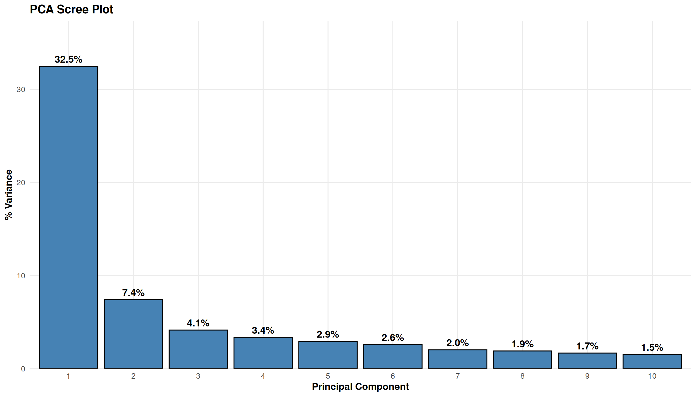
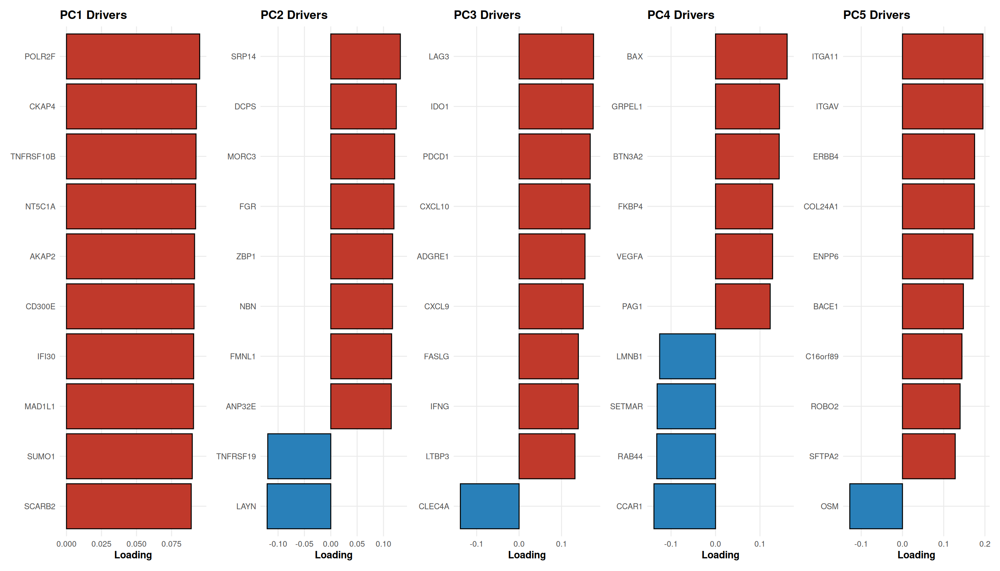
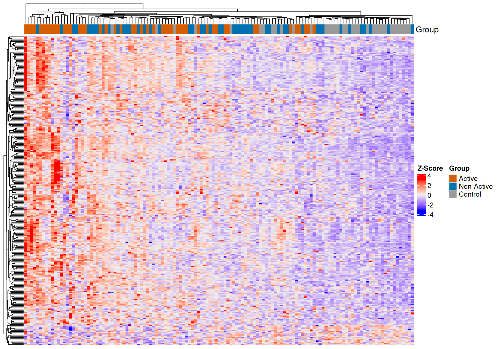
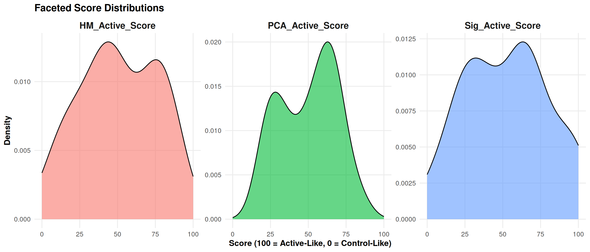
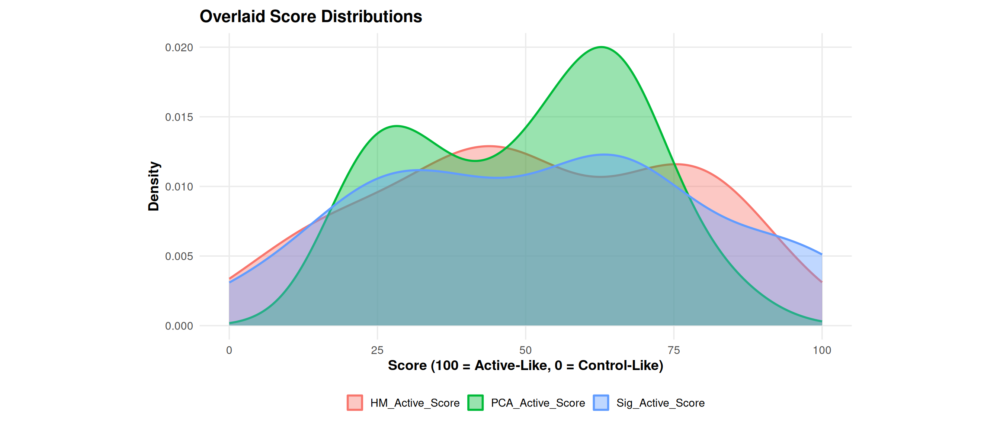
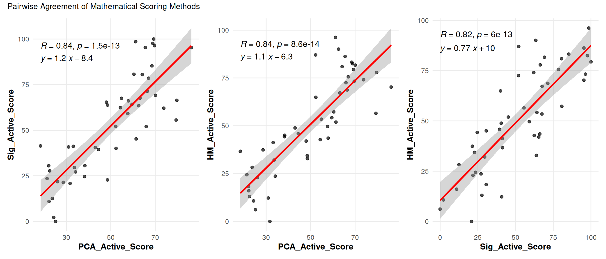

Last updated: 2026-05-04
Checks: 7 0
Knit directory: SSc-USZ/
This reproducible R Markdown analysis was created with workflowr (version 1.7.2). The Checks tab describes the reproducibility checks that were applied when the results were created. The Past versions tab lists the development history.
Great! Since the R Markdown file has been committed to the Git repository, you know the exact version of the code that produced these results.
Great job! The global environment was empty. Objects defined in the global environment can affect the analysis in your R Markdown file in unknown ways. For reproduciblity it’s best to always run the code in an empty environment.
The command set.seed(20260331) was run prior to running
the code in the R Markdown file. Setting a seed ensures that any results
that rely on randomness, e.g. subsampling or permutations, are
reproducible.
Great job! Recording the operating system, R version, and package versions is critical for reproducibility.
Nice! There were no cached chunks for this analysis, so you can be confident that you successfully produced the results during this run.
Great job! Using relative paths to the files within your workflowr project makes it easier to run your code on other machines.
Great! You are using Git for version control. Tracking code development and connecting the code version to the results is critical for reproducibility.
The results in this page were generated with repository version f95df40. See the Past versions tab to see a history of the changes made to the R Markdown and HTML files.
Note that you need to be careful to ensure that all relevant files for
the analysis have been committed to Git prior to generating the results
(you can use wflow_publish or
wflow_git_commit). workflowr only checks the R Markdown
file, but you know if there are other scripts or data files that it
depends on. Below is the status of the Git repository when the results
were generated:
Ignored files:
Ignored: .Rhistory
Ignored: .Rproj.user/
Ignored: output/01_data_import_and_qc/
Ignored: output/01a_data_import_and_qc/
Ignored: output/01b_clinical_feature_engineering/
Ignored: output/02_cohort_characterization/
Ignored: output/03a_proteomics_variance/
Ignored: output/03b_proteomics_differential/
Ignored: output/03c_proteomics_clustering/
Ignored: output/03d_proteomics_subgroups/
Ignored: output/randomizer/
Ignored: output/z01_sideproject_ellen/
Ignored: output/z02_sideproject_vascular_2/
Ignored: renv/library/
Ignored: renv/staging/
Untracked files:
Untracked: analysis/03e_proteomics_correlations.Rmd
Untracked: code/randomizer.R
Untracked: core
Unstaged changes:
Modified: analysis/01b_clinical_feature_engineering.Rmd
Modified: analysis/03b_proteomics_differential.Rmd
Modified: analysis/z02_sideproject_vascular_2.Rmd
Modified: code/00_omics_engines.R
Note that any generated files, e.g. HTML, png, CSS, etc., are not included in this status report because it is ok for generated content to have uncommitted changes.
These are the previous versions of the repository in which changes were
made to the R Markdown
(analysis/03d_proteomics_subgroups.Rmd) and HTML
(docs/03d_proteomics_subgroups.html) files. If you’ve
configured a remote Git repository (see ?wflow_git_remote),
click on the hyperlinks in the table below to view the files as they
were in that past version.
| File | Version | Author | Date | Message |
|---|---|---|---|---|
| Rmd | f95df40 | alexander-gysin | 2026-05-04 | wflow_publish("analysis/03d_proteomics_subgroups.Rmd") |
Goal: To mathematically triangulate the molecular phenotype of “Non-Active” SSc patients. Because they exhibit extreme clinical heterogeneity, we hypothesize this group contains distinct molecular sub-populations (Active-like vs Control-like).
We will derive three independent, continuous scores aligning Non-Active patients along the Control-to-Active molecular axis.
The computational pipeline currently lacks patient medication histories. If a Non-Active patient presents with a highly “Control-like” molecular signature, consider that this may represent successful pharmacological immunosuppression rather than a naturally benign disease state.
library(tidyverse)
library(patchwork)
library(here)
library(ComplexHeatmap)
library(circlize)
library(kableExtra)
library(ggpubr)
knitr::opts_chunk$set(warning = FALSE, message = FALSE)
# Paths
current_file <- "03d_proteomics_subgroups"
output_dir_data <- here::here("output", current_file)
if (!dir.exists(output_dir_data)) dir.create(output_dir_data, recursive = TRUE)
# Source Engines
source(here::here("code", "00_omics_engines.R"))
# Load Data
master_spine <- readRDS(here::here("output", "01b_clinical_feature_engineering", "curated_clinical_spine.rds"))
numeric_spine <- readRDS(here::here("output", "01b_clinical_feature_engineering", "curated_clinical_spine_numeric.rds"))
data_dict <- readRDS(here::here("output", "01b_clinical_feature_engineering", "clinical_data_dictionary.rds"))
olink_mat <- readRDS(here::here("output", "01a_data_import_and_qc", "clean_olink_matrix.rds"))
# Load DEA Signature (Active vs Control)
avc_dea <- readRDS(here::here("output", "03b_proteomics_differential", "dea_active_vs_control.rds"))# 1. Subgroup Definitions
groups <- list(
active = GRP_ACTIVE,
control = GRP_CONTROL,
target = GRP_NON_ACTIVE
)
# 2. Score Generation Configurations
score_conf <- list(
top_n_proteins = 260, # Number of highly variable/significant proteins to define the axis
pca_dimensions = 5 # Compute centroid distances across PC1-PC5
)
# 3. Discovery Correlation Thresholds
cor_conf <- list(
max_rows = 30,
prot_fdr = 0.05,
prot_rho = 0.40,
clin_fdr = 0.10,
clin_rho = 0.30
)
# 4. Plot Configurations
plot_conf <- list(
dist_bins = 20,
hm_font = 8
)# Extract Top 260 Proteins
sig_prots <- avc_dea %>% slice_min(adj.P.Val, n = score_conf$top_n_proteins) %>% pull(Feature)
valid_sig <- intersect(sig_prots, rownames(olink_mat))
# Restrict Matrix and deal with any NAs for PCA
sub_mat <- olink_mat[valid_sig, ]
sub_mat[is.na(sub_mat)] <- 0
pca_mat <- t(scale(t(sub_mat)))
# Run PCA
pca_res <- prcomp(t(pca_mat), center = FALSE, scale. = FALSE)
pca_df <- as.data.frame(pca_res$x[, 1:score_conf$pca_dimensions]) %>% rownames_to_column("Subject_ID")
pca_df <- pca_df %>% inner_join(master_spine %>% select(Subject_ID, cohort_group), by="Subject_ID")
# Calculate Centroids
cent_active <- pca_df %>% filter(cohort_group == groups$active) %>% select(starts_with("PC")) %>% colMeans()
cent_control <- pca_df %>% filter(cohort_group == groups$control) %>% select(starts_with("PC")) %>% colMeans()
# Calculate Euclidean Distances for Non-Actives
na_pca <- pca_df %>% filter(cohort_group == groups$target)
dist_df <- data.frame(Subject_ID = na_pca$Subject_ID)
dist_df$Dist_Active <- apply(na_pca %>% select(starts_with("PC")), 1, function(x) sqrt(sum((x - cent_active)^2)))
dist_df$Dist_Control <- apply(na_pca %>% select(starts_with("PC")), 1, function(x) sqrt(sum((x - cent_control)^2)))
# Score: Ratio of distances (100 = sits exactly on Active Centroid)
dist_df <- dist_df %>% mutate(PCA_Active_Score = (Dist_Control / (Dist_Active + Dist_Control)) * 100)
# Plots: Scree
var_exp <- (pca_res$sdev^2 / sum(pca_res$sdev^2)) * 100
plot_df_scree <- data.frame(PC = 1:10, Var = var_exp[1:10])
p_scree <- ggplot(plot_df_scree, aes(x=factor(PC), y=Var)) +
geom_bar(stat="identity", fill="steelblue", color="black") +
geom_text(aes(label = sprintf("%.1f%%", Var)), vjust = -0.5, size = 5, fontface = "bold") +
scale_y_continuous(expand = expansion(mult = c(0, 0.15))) + # Expands Y-axis so text fits
theme_project_base() +
labs(title="PCA Scree Plot", x="Principal Component", y="% Variance")
print(p_scree)
cat("\n\n<br>\n\n")
<br># Plots: PC1-PC5 Drivers
pc_plots <- list()
for(i in 1:5) {
pc_name <- paste0("PC", i)
pc_loads <- as.data.frame(pca_res$rotation) %>% select(all_of(pc_name)) %>%
arrange(desc(abs(.data[[pc_name]]))) %>% head(10) %>% rownames_to_column("Protein")
pc_plots[[i]] <- ggplot(pc_loads, aes(x=reorder(Protein, .data[[pc_name]]), y=.data[[pc_name]], fill=.data[[pc_name]]>0)) +
geom_bar(stat="identity", color="black") + coord_flip() + theme_project_base(10) +
scale_fill_manual(values = c("TRUE" = "#c0392b", "FALSE" = "#2980b9")) +
theme(legend.position="none", plot.title = element_text(size = 12)) +
labs(title=sprintf("%s Drivers", pc_name), x=NULL, y="Loading")
}
p_load_grid <- wrap_plots(pc_plots, ncol=5)
print(p_load_grid)
# Extract logFC Signature
logfc_sig <- avc_dea %>% filter(Feature %in% valid_sig) %>% select(Feature, logFC) %>% deframe()
# Calculate Spearman for each Non-Active Patient
cor_scores <- sapply(dist_df$Subject_ID, function(id) {
pt_vec <- olink_mat[valid_sig, id]
cor(pt_vec, logfc_sig[names(pt_vec)], method="spearman", use="complete.obs")
})
sig_df <- data.frame(
Subject_ID = names(cor_scores),
Raw_Rho = cor_scores
) %>%
# Min-Max Scale to 0-100
mutate(Sig_Active_Score = ((Raw_Rho - min(Raw_Rho)) / (max(Raw_Rho) - min(Raw_Rho))) * 100)# 1. Build Heatmap Data
hm_clin <- master_spine %>%
filter(Subject_ID %in% pca_df$Subject_ID, !is.na(cohort_group)) %>%
droplevels()
hm_mat <- t(scale(t(olink_mat[valid_sig, hm_clin$Subject_ID])))
# 2. Fetch proper colors using the actual levels
group_colors <- get_project_colors(levels(hm_clin$cohort_group))
# 3. Build Heatmap
hm <- Heatmap(hm_mat,
name = "Z-Score",
show_row_names = FALSE,
show_column_names = FALSE,
top_annotation = HeatmapAnnotation(Group = hm_clin$cohort_group, col = list(Group = group_colors)),
clustering_distance_columns = "euclidean",
clustering_method_columns = "complete")
# 4. Draw directly to the HTML
hm_drawn <- draw(hm)
# Extract order
order_idx <- column_order(hm_drawn)
ordered_ids <- colnames(hm_mat)[order_idx]
# 5. Map Order to 0-100 Percentile
hm_df <- data.frame(
Subject_ID = ordered_ids,
HM_Rank = 1:length(ordered_ids)
) %>%
mutate(HM_Percentile = (HM_Rank / max(HM_Rank)) * 100) %>%
inner_join(hm_clin %>% select(Subject_ID, cohort_group), by="Subject_ID")
# Check Polarity (Are Actives on the Left (0) or Right (100)?)
mean_active <- mean(hm_df$HM_Percentile[hm_df$cohort_group == groups$active])
mean_control <- mean(hm_df$HM_Percentile[hm_df$cohort_group == groups$control])
if (mean_active < mean_control) {
hm_df$HM_Active_Score <- 100 - hm_df$HM_Percentile
} else {
hm_df$HM_Active_Score <- hm_df$HM_Percentile
}
hm_final <- hm_df %>% filter(cohort_group == groups$target) %>% select(Subject_ID, HM_Active_Score)# Merge Master Score Dataframe
score_master <- dist_df %>% select(Subject_ID, PCA_Active_Score) %>%
inner_join(sig_df %>% select(Subject_ID, Sig_Active_Score), by="Subject_ID") %>%
inner_join(hm_final, by="Subject_ID")
# 1. Density Distributions (Faceted)
score_long <- score_master %>% pivot_longer(-Subject_ID, names_to="Score_Type", values_to="Score")
p_dens_facet <- ggplot(score_long, aes(x=Score, fill=Score_Type)) +
geom_density(alpha=0.6) +
facet_wrap(~Score_Type, scales="free_y") +
theme_project_base() + theme(legend.position="none") +
labs(title="Faceted Score Distributions", x="Score (100 = Active-Like, 0 = Control-Like)", y="Density")
print(p_dens_facet)
cat("\n\n<br>\n\n")
<br># 2. Density Distributions (Overlaid Standalone)
p_dens_overlay <- ggplot(score_long, aes(x=Score, fill=Score_Type, color=Score_Type)) +
geom_density(alpha=0.4, linewidth=1) +
theme_project_base() + theme(legend.position="bottom", legend.title=element_blank()) +
labs(title="Overlaid Score Distributions", x="Score (100 = Active-Like, 0 = Control-Like)", y="Density") +
theme(plot.margin = margin(t = 10, r = 150, b = 10, l = 150, unit = "pt"))
print(p_dens_overlay)
cat("\n\n<br>\n\n")
<br># 3. Pairwise Correlations with ggpubr Stats
p1 <- ggplot(score_master, aes(x=PCA_Active_Score, y=Sig_Active_Score)) +
geom_point(alpha=0.7) + geom_smooth(method="lm", color="red") +
stat_cor(label.y.npc = "top") + stat_regline_equation(label.y.npc = 0.9) +
theme_project_base()
p2 <- ggplot(score_master, aes(x=PCA_Active_Score, y=HM_Active_Score)) +
geom_point(alpha=0.7) + geom_smooth(method="lm", color="red") +
stat_cor(label.y.npc = "top") + stat_regline_equation(label.y.npc = 0.9) +
theme_project_base()
p3 <- ggplot(score_master, aes(x=Sig_Active_Score, y=HM_Active_Score)) +
geom_point(alpha=0.7) + geom_smooth(method="lm", color="red") +
stat_cor(label.y.npc = "top") + stat_regline_equation(label.y.npc = 0.9) +
theme_project_base()
p_corrs <- (p1 | p2 | p3) + plot_annotation(title="Pairwise Agreement of Mathematical Scoring Methods")
print(p_corrs)
# Prepare Matrices (Non-Actives Only)
na_ids <- score_master$Subject_ID
prot_mat_na <- olink_mat[, na_ids]
clin_df_na <- numeric_spine %>% filter(Subject_ID %in% na_ids)
clin_mat_na <- t(clin_df_na %>% column_to_rownames("Subject_ID") %>% select(where(is.numeric)))
score_targets <- c("PCA_Active_Score", "Sig_Active_Score", "HM_Active_Score")
modalities <- list(proteomics = prot_mat_na, clinical = clin_mat_na)
html_out <- ""
for (mod_name in names(modalities)) {
if (!interactive()) html_out <- paste0(html_out, sprintf("\n\n## %s {.tabset}\n\n", tools::toTitleCase(mod_name)))
for (score_name in score_targets) {
clean_score <- gsub("_", " ", score_name)
if (!interactive()) html_out <- paste0(html_out, sprintf("\n\n### %s\n\n", clean_score))
# Calculate using Smart Engine
score_vec <- setNames(score_master[[score_name]], score_master$Subject_ID)
res_df <- run_smart_mass_cor(modalities[[mod_name]], score_vec, dict_df = data_dict)
# Export full dataset
export_name <- sprintf("Drivers_%s_vs_%s.csv", tools::toTitleCase(mod_name), score_name)
write_csv(res_df, file.path(output_dir_data, export_name))
# Filter
thresh_fdr <- if(mod_name == "proteomics") cor_conf$prot_fdr else cor_conf$clin_fdr
thresh_rho <- if(mod_name == "proteomics") cor_conf$prot_rho else cor_conf$clin_rho
sig_df <- res_df %>% filter(FDR < thresh_fdr & abs(Effect) >= thresh_rho)
# Comprehensive Descriptive Header
caption <- sprintf("
<div style='background-color:#f9f9f9; padding: 10px; border-left: 4px solid #2980b9; margin-bottom: 15px;'>
<b>Statistical Overview</b><br>
<i>Cohort Size:</i> %d Non-Active patients<br>
<i>Thresholds:</i> FDR < %s, |Effect| >= %s<br>
<i>Note:</i> 'Effect' represents Spearman's Rho for continuous variables, and Wilcoxon Effect Size (r) for binary categoricals. Displaying top %d.
</div>", length(na_ids), thresh_fdr, thresh_rho, min(nrow(sig_df), cor_conf$max_rows))
if (nrow(sig_df) > 0) {
tbl_html <- sig_df %>% head(cor_conf$max_rows) %>%
kbl(format = "html", digits = 3, align = "c") %>%
kable_styling(bootstrap_options = c("striped", "hover", "condensed"), full_width = TRUE) %>%
scroll_box(height = "500px")
if (interactive()) {
cat(sprintf("\n=== %s vs %s ===\n", tools::toTitleCase(mod_name), clean_score))
cat(caption, "\n")
print(tbl_html)
} else {
html_out <- paste0(html_out, caption, "\n", tbl_html, "\n\n")
}
} else {
empty_msg <- "> No features passed the significance thresholds.\n\n"
if (interactive()) {
cat(sprintf("\n=== %s vs %s ===\n", tools::toTitleCase(mod_name), clean_score))
cat(caption, "\n", empty_msg)
} else {
html_out <- paste0(html_out, caption, "\n", empty_msg)
}
}
}
}
if (!interactive()) cat(html_out)Statistical Overview
Cohort Size: 48 Non-Active
patients
Thresholds: FDR < 0.05, |Effect| >= 0.4
Note: ‘Effect’ represents Spearman’s Rho for continuous
variables, and Wilcoxon Effect Size (r) for binary categoricals.
Displaying top 30.
| Feature | Effect | P_Val | Method | FDR |
|---|---|---|---|---|
| POLR2F | 0.793 | 0 | Spearman | 0 |
| TNFRSF10B | 0.770 | 0 | Spearman | 0 |
| MAD1L1 | 0.764 | 0 | Spearman | 0 |
| SCARB2 | 0.761 | 0 | Spearman | 0 |
| CKAP4 | 0.753 | 0 | Spearman | 0 |
| NT5C1A | 0.731 | 0 | Spearman | 0 |
| TIGAR | 0.724 | 0 | Spearman | 0 |
| EPHA2 | 0.716 | 0 | Spearman | 0 |
| CD300E | 0.710 | 0 | Spearman | 0 |
| TGFA | 0.709 | 0 | Spearman | 0 |
| JTB | 0.707 | 0 | Spearman | 0 |
| S100A11 | 0.706 | 0 | Spearman | 0 |
| TNFRSF11A | 0.703 | 0 | Spearman | 0 |
| PGF | 0.701 | 0 | Spearman | 0 |
| BTN3A2 | 0.700 | 0 | Spearman | 0 |
| GFRA1 | 0.696 | 0 | Spearman | 0 |
| LILRB4 | 0.695 | 0 | Spearman | 0 |
| EFNA4 | 0.690 | 0 | Spearman | 0 |
| CDCP1 | 0.689 | 0 | Spearman | 0 |
| HSPB6 | 0.689 | 0 | Spearman | 0 |
| IFI30 | 0.686 | 0 | Spearman | 0 |
| TNFRSF19 | 0.686 | 0 | Spearman | 0 |
| RBFOX3 | 0.683 | 0 | Spearman | 0 |
| NUCB2 | 0.682 | 0 | Spearman | 0 |
| HGF | 0.682 | 0 | Spearman | 0 |
| TNFSF13 | 0.682 | 0 | Spearman | 0 |
| CAPG | 0.678 | 0 | Spearman | 0 |
| NAGK | 0.676 | 0 | Spearman | 0 |
| IL12RB1 | 0.669 | 0 | Spearman | 0 |
| DTNB | 0.669 | 0 | Spearman | 0 |
Statistical Overview
Cohort Size: 48 Non-Active
patients
Thresholds: FDR < 0.05, |Effect| >= 0.4
Note: ‘Effect’ represents Spearman’s Rho for continuous
variables, and Wilcoxon Effect Size (r) for binary categoricals.
Displaying top 30.
| Feature | Effect | P_Val | Method | FDR |
|---|---|---|---|---|
| TNFRSF10B | 0.870 | 0 | Spearman | 0 |
| POLR2F | 0.818 | 0 | Spearman | 0 |
| MAD1L1 | 0.813 | 0 | Spearman | 0 |
| IFI30 | 0.781 | 0 | Spearman | 0 |
| S100A11 | 0.757 | 0 | Spearman | 0 |
| HGF | 0.751 | 0 | Spearman | 0 |
| OCLN | 0.751 | 0 | Spearman | 0 |
| NT5C1A | 0.749 | 0 | Spearman | 0 |
| CAPG | 0.743 | 0 | Spearman | 0 |
| CDCP1 | 0.731 | 0 | Spearman | 0 |
| LMNB2 | 0.731 | 0 | Spearman | 0 |
| RBFOX3 | 0.726 | 0 | Spearman | 0 |
| PGF | 0.723 | 0 | Spearman | 0 |
| EPHA2 | 0.720 | 0 | Spearman | 0 |
| IL12RB1 | 0.707 | 0 | Spearman | 0 |
| CKAP4 | 0.703 | 0 | Spearman | 0 |
| SWAP70 | 0.702 | 0 | Spearman | 0 |
| TIGAR | 0.696 | 0 | Spearman | 0 |
| HNRNPUL1 | 0.694 | 0 | Spearman | 0 |
| TGFA | 0.694 | 0 | Spearman | 0 |
| SCARB2 | 0.689 | 0 | Spearman | 0 |
| TPR | 0.689 | 0 | Spearman | 0 |
| LILRB4 | 0.688 | 0 | Spearman | 0 |
| CXCL17 | 0.687 | 0 | Spearman | 0 |
| SERPINB8 | 0.671 | 0 | Spearman | 0 |
| TNFSF13 | 0.667 | 0 | Spearman | 0 |
| GFRA1 | 0.664 | 0 | Spearman | 0 |
| VEGFA | 0.663 | 0 | Spearman | 0 |
| CD300E | 0.660 | 0 | Spearman | 0 |
| EGLN1 | 0.660 | 0 | Spearman | 0 |
Statistical Overview
Cohort Size: 48 Non-Active
patients
Thresholds: FDR < 0.05, |Effect| >= 0.4
Note: ‘Effect’ represents Spearman’s Rho for continuous
variables, and Wilcoxon Effect Size (r) for binary categoricals.
Displaying top 30.
| Feature | Effect | P_Val | Method | FDR |
|---|---|---|---|---|
| CD300E | 0.826 | 0 | Spearman | 0 |
| POLR2F | 0.816 | 0 | Spearman | 0 |
| IL12RB1 | 0.804 | 0 | Spearman | 0 |
| IFI30 | 0.795 | 0 | Spearman | 0 |
| TIGAR | 0.781 | 0 | Spearman | 0 |
| SCARB2 | 0.763 | 0 | Spearman | 0 |
| EFNA4 | 0.753 | 0 | Spearman | 0 |
| MAD1L1 | 0.752 | 0 | Spearman | 0 |
| CKAP4 | 0.752 | 0 | Spearman | 0 |
| CLEC7A | 0.751 | 0 | Spearman | 0 |
| TNFRSF10B | 0.745 | 0 | Spearman | 0 |
| TNFRSF11A | 0.743 | 0 | Spearman | 0 |
| CDCP1 | 0.734 | 0 | Spearman | 0 |
| TGFA | 0.719 | 0 | Spearman | 0 |
| BTN3A2 | 0.705 | 0 | Spearman | 0 |
| EPHA2 | 0.694 | 0 | Spearman | 0 |
| S100A11 | 0.692 | 0 | Spearman | 0 |
| TNFSF13 | 0.691 | 0 | Spearman | 0 |
| CD274 | 0.686 | 0 | Spearman | 0 |
| GCNT1 | 0.672 | 0 | Spearman | 0 |
| LILRB4 | 0.671 | 0 | Spearman | 0 |
| IL15RA | 0.668 | 0 | Spearman | 0 |
| CD300LB | 0.667 | 0 | Spearman | 0 |
| ZBTB17 | 0.664 | 0 | Spearman | 0 |
| NUCB2 | 0.663 | 0 | Spearman | 0 |
| CD83 | 0.663 | 0 | Spearman | 0 |
| CD4 | 0.662 | 0 | Spearman | 0 |
| ATRAID | 0.661 | 0 | Spearman | 0 |
| TNFRSF19 | 0.661 | 0 | Spearman | 0 |
| MATN3 | 0.656 | 0 | Spearman | 0 |
Statistical Overview
Cohort Size: 48 Non-Active
patients
Thresholds: FDR < 0.1, |Effect| >= 0.3
Note: ‘Effect’ represents Spearman’s Rho for continuous
variables, and Wilcoxon Effect Size (r) for binary categoricals.
Displaying top 9.
| Feature | Effect | P_Val | Method | FDR |
|---|---|---|---|---|
| Max Borg Dyspnea | 0.707 | 0.000 | Spearman | 0.001 |
| Age | 0.567 | 0.000 | Spearman | 0.001 |
| Birth_Year | -0.558 | 0.000 | Spearman | 0.001 |
| Uric Acid (mg/dl) | 0.560 | 0.000 | Spearman | 0.001 |
| log_Uric_Acid__mg_dl | 0.560 | 0.000 | Spearman | 0.001 |
| DLCO (SB) (% predicted) | -0.472 | 0.001 | Spearman | 0.017 |
| Creatinine | 0.417 | 0.004 | Spearman | 0.054 |
| log_Creatinine | 0.417 | 0.004 | Spearman | 0.054 |
| Pulmonary arterial hypertension and/or Interstitial lg Disease | 0.390 | 0.006 | Spearman | 0.076 |
Statistical Overview
Cohort Size: 48 Non-Active
patients
Thresholds: FDR < 0.1, |Effect| >= 0.3
Note: ‘Effect’ represents Spearman’s Rho for continuous
variables, and Wilcoxon Effect Size (r) for binary categoricals.
Displaying top 26.
| Feature | Effect | P_Val | Method | FDR |
|---|---|---|---|---|
| Max Borg Dyspnea | 0.712 | 0.000 | Spearman | 0.001 |
| DLCO (SB) (% predicted) | -0.583 | 0.000 | Spearman | 0.001 |
| Uric Acid (mg/dl) | 0.578 | 0.000 | Spearman | 0.001 |
| log_Uric_Acid__mg_dl | 0.578 | 0.000 | Spearman | 0.001 |
| Pulmonary arterial hypertension and/or Interstitial lg Disease | 0.558 | 0.000 | Spearman | 0.001 |
| Age | 0.527 | 0.000 | Spearman | 0.002 |
| eustarAI | 0.527 | 0.000 | Spearman | 0.002 |
| Creatinine | 0.536 | 0.000 | Spearman | 0.002 |
| log_Creatinine | 0.536 | 0.000 | Spearman | 0.002 |
| Birth_Year | -0.523 | 0.000 | Spearman | 0.002 |
| TAPSE (cm) | -0.497 | 0.001 | Spearman | 0.005 |
| log_TAPSE__cm | -0.497 | 0.001 | Spearman | 0.005 |
| Auricular arrhythmias | 0.449 | 0.002 | Wilcoxon | 0.016 |
| Right atrium area (cm2) | 0.448 | 0.002 | Spearman | 0.016 |
| Modified rodnan skin score | 0.428 | 0.002 | Spearman | 0.016 |
| log_Modified_rodnan_skin_score | 0.428 | 0.002 | Spearman | 0.016 |
| mRSS_a | 0.427 | 0.002 | Spearman | 0.016 |
| DLCO/VA (% predicted) | -0.414 | 0.004 | Spearman | 0.026 |
| New Cardiac Manifest. | 0.381 | 0.008 | Wilcoxon | 0.048 |
| Right_Fingers | 0.370 | 0.010 | Spearman | 0.053 |
| Total Score | 0.354 | 0.014 | Spearman | 0.072 |
| LVEF % | -0.361 | 0.015 | Spearman | 0.074 |
| New PAH | 0.343 | 0.017 | Wilcoxon | 0.084 |
| Telangiectasia | 0.336 | 0.020 | Wilcoxon | 0.092 |
| Min SpO2 (Exercise) | -0.405 | 0.021 | Spearman | 0.092 |
| log_Min_SpO2__Exercise | -0.405 | 0.021 | Spearman | 0.092 |
Statistical Overview
Cohort Size: 48 Non-Active
patients
Thresholds: FDR < 0.1, |Effect| >= 0.3
Note: ‘Effect’ represents Spearman’s Rho for continuous
variables, and Wilcoxon Effect Size (r) for binary categoricals.
Displaying top 12.
| Feature | Effect | P_Val | Method | FDR |
|---|---|---|---|---|
| Max Borg Dyspnea | 0.680 | 0.000 | Spearman | 0.002 |
| Uric Acid (mg/dl) | 0.554 | 0.000 | Spearman | 0.002 |
| log_Uric_Acid__mg_dl | 0.554 | 0.000 | Spearman | 0.002 |
| DLCO (SB) (% predicted) | -0.504 | 0.000 | Spearman | 0.009 |
| Pulmonary arterial hypertension and/or Interstitial lg Disease | 0.489 | 0.000 | Spearman | 0.009 |
| Age | 0.469 | 0.001 | Spearman | 0.011 |
| TAPSE (cm) | -0.483 | 0.001 | Spearman | 0.011 |
| log_TAPSE__cm | -0.483 | 0.001 | Spearman | 0.011 |
| Birth_Year | -0.464 | 0.001 | Spearman | 0.011 |
| eustarAI | 0.429 | 0.002 | Spearman | 0.026 |
| DLCO/VA (% predicted) | -0.389 | 0.007 | Spearman | 0.071 |
| New PAH | 0.384 | 0.008 | Wilcoxon | 0.071 |
# Cleanup RAM
rm(prot_mat_na, clin_mat_na, clin_df_na, na_ids, html_out)cat("Script 03d Complete! \n")Script 03d Complete!
sessionInfo()R version 4.5.2 (2025-10-31)
Platform: x86_64-pc-linux-gnu
Running under: Ubuntu 24.04.3 LTS
Matrix products: default
BLAS: /usr/lib/x86_64-linux-gnu/openblas-pthread/libblas.so.3
LAPACK: /usr/lib/x86_64-linux-gnu/openblas-pthread/libopenblasp-r0.3.26.so; LAPACK version 3.12.0
locale:
[1] LC_CTYPE=en_US.UTF-8 LC_NUMERIC=C
[3] LC_TIME=en_US.UTF-8 LC_COLLATE=en_US.UTF-8
[5] LC_MONETARY=en_US.UTF-8 LC_MESSAGES=en_US.UTF-8
[7] LC_PAPER=en_US.UTF-8 LC_NAME=C
[9] LC_ADDRESS=C LC_TELEPHONE=C
[11] LC_MEASUREMENT=en_US.UTF-8 LC_IDENTIFICATION=C
time zone: Etc/UTC
tzcode source: system (glibc)
attached base packages:
[1] grid stats graphics grDevices datasets utils methods
[8] base
other attached packages:
[1] car_3.1-5 carData_3.0-6 future.apply_1.20.2
[4] future_1.70.0 variancePartition_1.40.2 BiocParallel_1.44.0
[7] ggVennDiagram_1.5.7 glmnet_4.1-10 Matrix_1.7-5
[10] UpSetR_1.4.0 ggridges_0.5.7 ggrepel_0.9.8
[13] pheatmap_1.0.13 enrichplot_1.30.5 clusterProfiler_4.18.4
[16] factoextra_2.0.0 FactoMineR_2.13 limma_3.66.0
[19] ggpubr_0.6.3 kableExtra_1.4.0 circlize_0.4.18
[22] ComplexHeatmap_2.26.1 here_1.0.2 patchwork_1.3.2
[25] lubridate_1.9.5 forcats_1.0.1 stringr_1.6.0
[28] dplyr_1.2.1 purrr_1.2.1 readr_2.2.0
[31] tidyr_1.3.2 tibble_3.3.1 tidyverse_2.0.0
[34] ggplot2_4.0.2 workflowr_1.7.2
loaded via a namespace (and not attached):
[1] fs_2.0.1 matrixStats_1.5.0 bitops_1.0-9
[4] httr_1.4.8 RColorBrewer_1.1-3 doParallel_1.0.17
[7] numDeriv_2016.8-1.1 tools_4.5.2 backports_1.5.1
[10] R6_2.6.1 DT_0.34.0 mgcv_1.9-4
[13] lazyeval_0.2.2 GetoptLong_1.1.0 withr_3.0.2
[16] gridExtra_2.3 cli_3.6.5 Biobase_2.70.0
[19] textshaping_1.0.5 flashClust_1.1-4 scatterpie_0.2.6
[22] labeling_0.4.3 sass_0.4.10 mvtnorm_1.3-6
[25] S7_0.2.1 systemfonts_1.3.2 yulab.utils_0.2.4
[28] gson_0.1.0 DOSE_4.4.0 svglite_2.2.2
[31] R.utils_2.13.0 parallelly_1.46.1 rstudioapi_0.18.0
[34] RSQLite_2.4.6 generics_0.1.4 gridGraphics_0.5-1
[37] shape_1.4.6.1 vroom_1.7.1 gtools_3.9.5
[40] GO.db_3.22.0 leaps_3.2 S4Vectors_0.48.1
[43] abind_1.4-8 R.methodsS3_1.8.2 lifecycle_1.0.5
[46] whisker_0.4.1 scatterplot3d_0.3-45 yaml_2.3.12
[49] gplots_3.3.0 qvalue_2.42.0 blob_1.3.0
[52] promises_1.5.0 crayon_1.5.3 ggtangle_0.1.1
[55] lattice_0.22-9 cowplot_1.2.0 KEGGREST_1.50.0
[58] pillar_1.11.1 knitr_1.51 fgsea_1.36.2
[61] boot_1.3-32 rjson_0.2.23 estimability_1.5.1
[64] corpcor_1.6.10 codetools_0.2-20 fastmatch_1.1-8
[67] glue_1.8.0 ggiraph_0.9.6 getPass_0.2-4
[70] ggfun_0.2.0 fontLiberation_0.1.0 data.table_1.18.2.1
[73] vctrs_0.7.2 png_0.1-9 treeio_1.34.0
[76] Rdpack_2.6.6 gtable_0.3.6 cachem_1.1.0
[79] xfun_0.57 rbibutils_2.4.1 Seqinfo_1.0.0
[82] reformulas_0.4.4 survival_3.8-6 iterators_1.0.14
[85] statmod_1.5.1 nlme_3.1-169 pbkrtest_0.5.5
[88] ggtree_4.0.5 bit64_4.6.0-1 fontquiver_0.2.1
[91] EnvStats_3.1.0 rprojroot_2.1.1 bslib_0.10.0
[94] KernSmooth_2.23-26 otel_0.2.0 colorspace_2.1-2
[97] BiocGenerics_0.56.0 DBI_1.3.0 tidyselect_1.2.1
[100] processx_3.8.7 emmeans_2.0.2 bit_4.6.0
[103] compiler_4.5.2 git2r_0.36.2 xml2_1.5.2
[106] fontBitstreamVera_0.1.1 scales_1.4.0 caTools_1.18.3
[109] remaCor_0.0.20 callr_3.7.6 multcompView_0.1-11
[112] rappdirs_0.3.4 digest_0.6.39 minqa_1.2.8
[115] rmarkdown_2.31 aod_1.3.3 XVector_0.50.0
[118] RhpcBLASctl_0.23-42 htmltools_0.5.9 pkgconfig_2.0.3
[121] lme4_2.0-1 fastmap_1.2.0 rlang_1.2.0
[124] GlobalOptions_0.1.3 htmlwidgets_1.6.4 farver_2.1.2
[127] jquerylib_0.1.4 jsonlite_2.0.0 GOSemSim_2.36.0
[130] R.oo_1.27.1 magrittr_2.0.5 polynom_1.4-1
[133] Formula_1.2-5 ggplotify_0.1.3 Rcpp_1.1.1
[136] ape_5.8-1 ggnewscale_0.5.2 gdtools_0.5.0
[139] stringi_1.8.7 MASS_7.3-65 plyr_1.8.9
[142] listenv_0.10.1 parallel_4.5.2 Biostrings_2.78.0
[145] splines_4.5.2 hms_1.1.4 ps_1.9.2
[148] igraph_2.2.2 ggsignif_0.6.4 reshape2_1.4.5
[151] stats4_4.5.2 evaluate_1.0.5 renv_1.1.5
[154] BiocManager_1.30.27 nloptr_2.2.1 tzdb_0.5.0
[157] foreach_1.5.2 tweenr_2.0.3 httpuv_1.6.16
[160] polyclip_1.10-7 clue_0.3-68 ggforce_0.5.0
[163] broom_1.0.12 fANCOVA_0.6-1 tidytree_0.4.7
[166] tidydr_0.0.6 rstatix_0.7.3 later_1.4.8
[169] viridisLite_0.4.3 lmerTest_3.2-1 aplot_0.2.9
[172] memoise_2.0.1 AnnotationDbi_1.72.0 IRanges_2.44.0
[175] cluster_2.1.8.2 globals_0.19.1 timechange_0.4.0